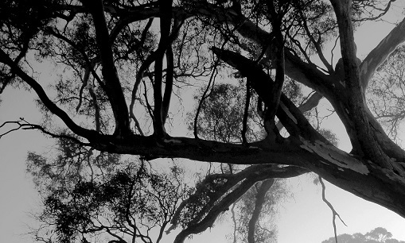

Too many doctors and nurses are paying the ultimate price while battling Covid-19, the World Health Organization said Thursday as it launched a charter aiming to boost safety for health workers. The UN health agency said that the pandemic had exposed health workers and their families to "unprecedented levels of risk".
About Nature
Nature, in the broadest sense, is the natural, physical, or material world or universe. "Nature" can refer to the phenomena of the physical world, and also to life in general. The study of nature is a large, if not the only, part of science. Although humans are part of nature, human activity is often understood as a separate category from other natural phenomena
On the fourth day of Parliament session, which is being held amid strict Covid-19 protocols, Lok Sabha passed two contentious legislations ––– Farmers’ Produce Trade and Commerce (Promotion and Facilitation) Bill, 2020, and The Farmers (Empowerment and Protection) Agreement on Price Assurance and Farm Services Bill, 2020 through voice vote. Moving the bills in the Lower House, Agriculture Minister Narendra Singh Tomar said they are aimed at making farming profitable and clarified that these bills would not have any impact on the Minimum Support Price (MSP) mechanism, which will continue. He further assured that these legislations would not encroach upon the Agriculture Produce Marketing Committee (APMC) Acts of the states.
>Former Pakistan spinner Tauseef Ahmed says the ICC anti-corruption and security unit need to probe the World T20 match between India and Bangladesh since the result looks suspicious.